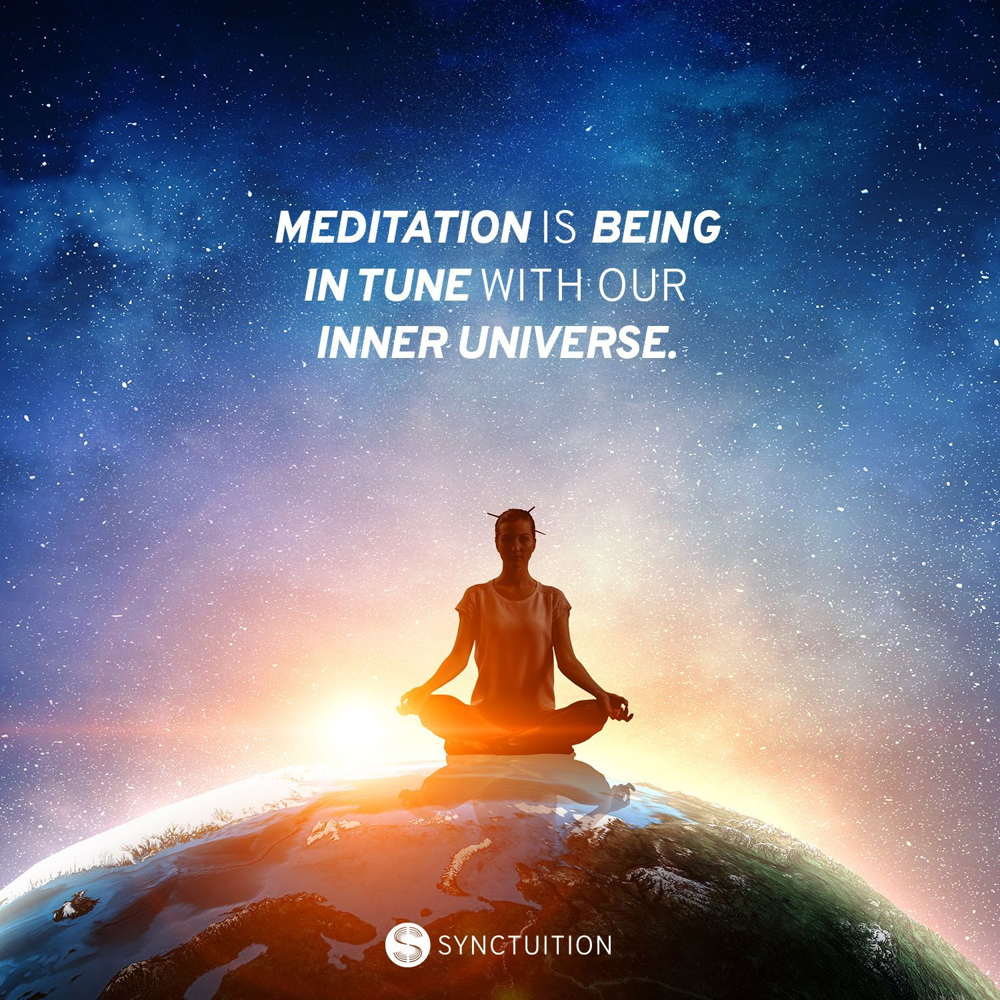

Just like how only a healthy bud can blossom, similarly, only when we are healthy can we blossom to our full potential. To attain a perfect state of health, one has to be mentally calm, steady and emotionally stable. ‘Swasthya’ means health. It also means being in one's self. Swasthya or health is not just confined to the body and the mind but is also connected with consciousness. The clearer one’s consciousness, the more one’s sense of well-being increases.
A time may come in the future when people will be fined for being depressed because they are creating emotional pollution! The words that you hear from people around you affect your state of mind. They either give you peace and joy or create negative emotions, such as jealousy, anger, frustration or sadness. You are affected because the mind is not centered. Meditation is a key to clear away the emotional issues. Experience a state of deep rest and clarity of mind with ‘Transforming Emotions’, an online guided meditation by Gurudev Sri Sri Ravi Shankar. 